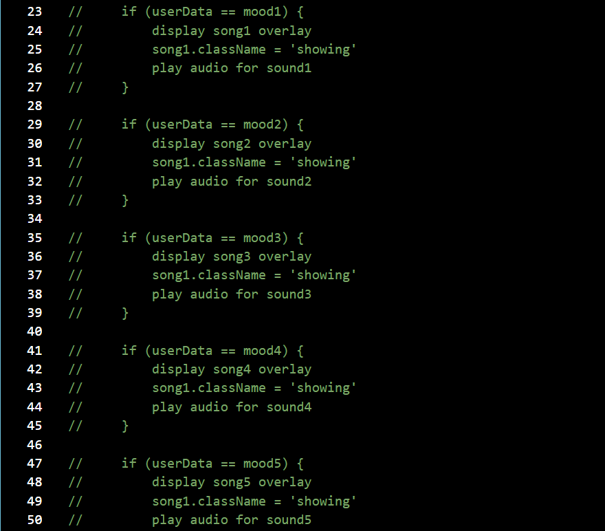
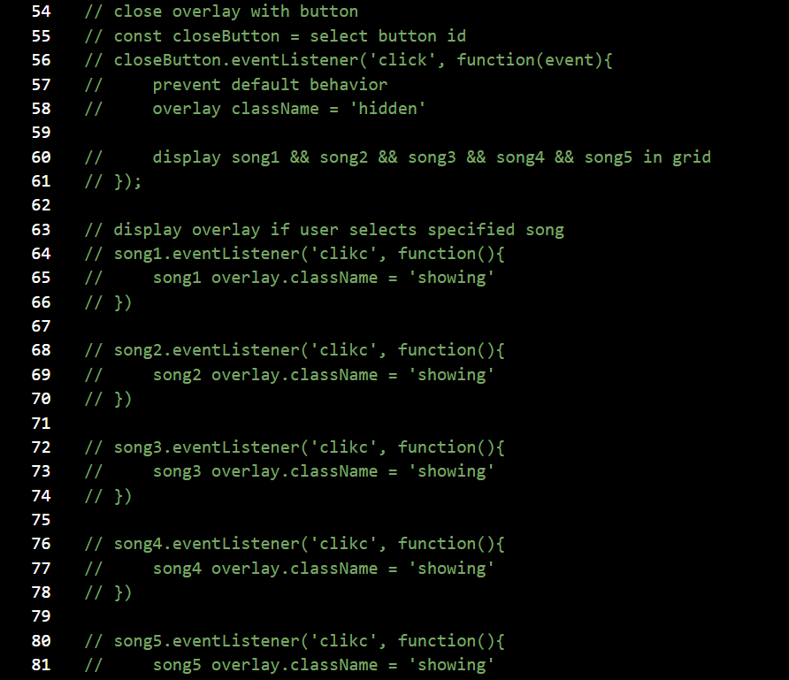

Functional Diagram
I created a flow diagram to illustrate user input. My project starts with prompting the user to enter a mood. In return, there are five options to choose from each giving different results. This concept is different than my original idea as orginally I was simply creating a music player. In this concept I am making my project more interactive by adding a prompt and making the sound bar interactive.
Pseudocode
The code that I need to write requires the user to fill out a form and in return a song and photo is displayed based off of the mood the user types in. First I created a variable to grab the user data and a variable for each individual mood overlay. I then created a variable for each value that is returned.
I created multiple if statements based on what mood the user chooses. If the user types a certain mood, a specific overlay that is attached to that mood will display the photo, description and play the song for that mood. In order to do this I will have each mood be in the hidden class and change the class name to showing when the user enters the specified mood.
The user is then able to close the overlay displayed with a button, this results in the user accessing the entire song library. The user is able to then select each individual mood and explore the song library.